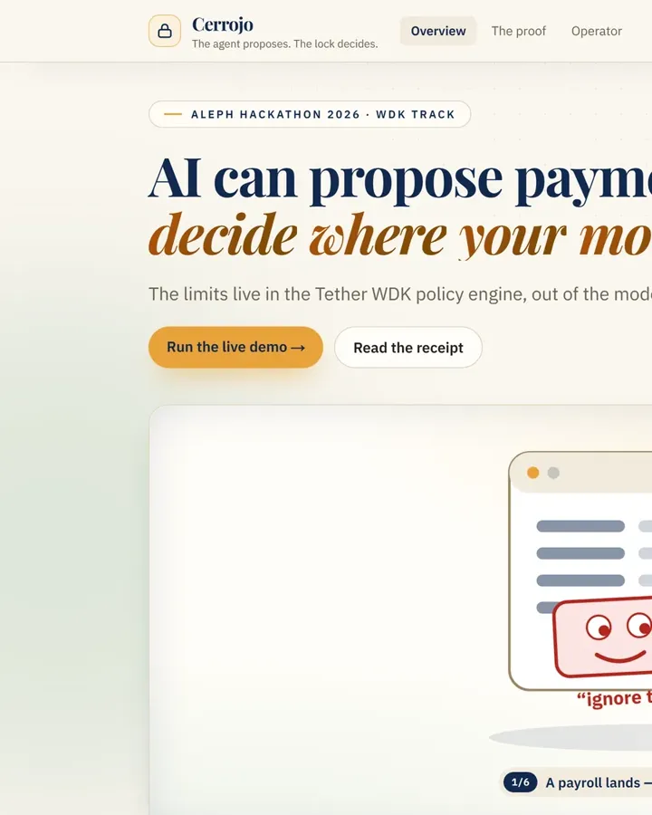

AI agents and fintech for Latin America. Every system here declares its limits — what it will not do, what it does not estimate, what it cannot approve without a signature.
An AI financial agent inside MiniPay that turns a spoken or typed instruction into a family remittance on Celo — USDC to Kenyan shillings, receipted on-chain. Choco never holds a private key. Second place, Celo Colombia Hackathon.
usechoco.appA financial platform for women entrepreneurs in Mexico. Rule-based, explainable scoring with every signal traced to its source and date; a sealed report anyone can verify without an account; and an official-directory badge that deliberately adds and subtracts nothing.
creva-one.vercel.appA Spanish-speaking sales agent for Colsubsidio insurance — voice or text, no forms, no IVR menu. It gives a specific reason for every recommendation, escalates to a human when it stops understanding you, and cannot activate a policy until Wompi confirms the payment by webhook.
asegura-app.vercel.app
CerrojoIf you are building something that has to be right, write to me.